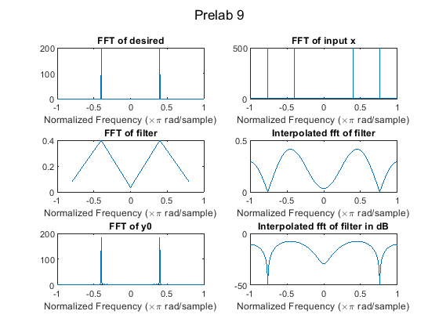
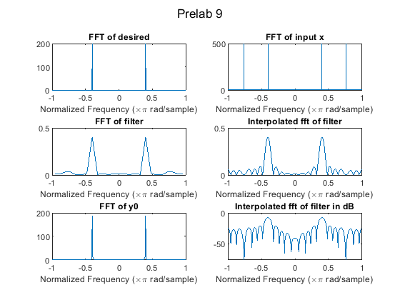
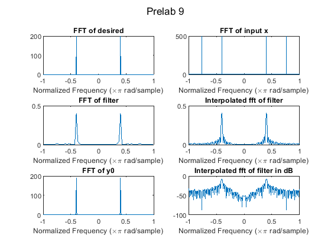
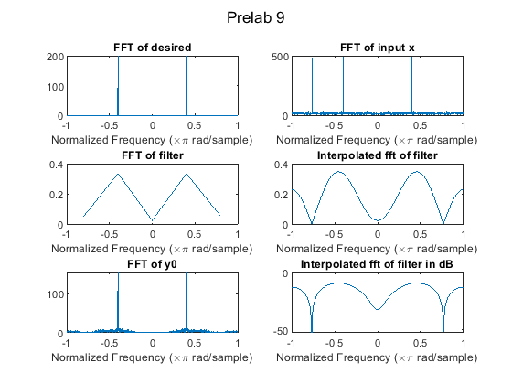
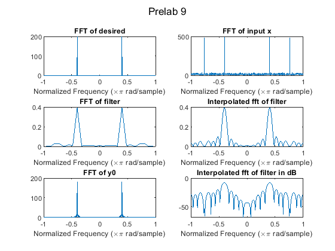
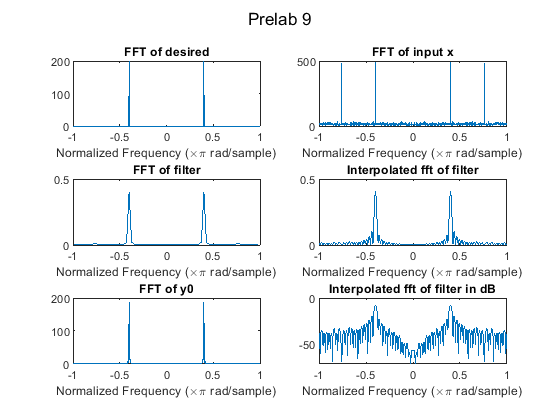

close
clear all
clc
MM = [5 25 75];
L = 1000;
aa = [0.1 0.5];
for ka = [1 2]
a = aa(ka);
xs = cos( 2*pi*0.38*(0:(L-1)))+a*randn(1,L) + cos(2*pi*0.2*(0:(L-1)));
xd = cos(2*pi*0.2*(0:(L-1)) + pi/5)*0.4;
for kM = 1:3
M = MM(kM);
R = zeros(M);
P = zeros(M,1);
for n = M:L
xn = xs(n:-1:(n-M+1));
R = R + xn'*xn;
P = P + xd(n)*xn';
end
ev = eig(R);
w = inv(R)*P;
figure((ka-1)*3+kM)
sgtitle("Prelab 9")
subplot(3,2,1)
fv = (0:(L-1)) - floor(L/2);
fv = 2*fv/L;
plot(fv, abs(fftshift(fft(xd))));
xlabel('Normalized Frequency (\times\pi rad/sample)')
title('FFT of desired')
subplot(3,2,2)
plot(fv, abs(fftshift(fft(xs))));
xlabel('Normalized Frequency (\times\pi rad/sample)')
title('FFT of input x')
subplot(3,2,3)
fvM = (0:(M-1)) - floor(M/2);
fvM = 2*fvM/M;
plot(fvM, abs(fftshift(fft(w))));
xlabel('Normalized Frequency (\times\pi rad/sample)')
title('FFT of filter')
subplot(3,2,4)
fvM0 = (0:(512-1)) - floor(512/2);
fvM0 = 2*fvM0/512;
plot(fvM0, abs(fftshift(fft(w,512))));
xlabel('Normalized Frequency (\times\pi rad/sample)')
title('Interpolated fft of filter')
y = conv(w,xs);
subplot(3,2,5)
fvy = (0:(length(y)-1)) - floor(length(y)/2);
fvy = 2*fvy/length(y);
plot(fvy, abs(fftshift(fft(y))));
xlabel('Normalized Frequency (\times\pi rad/sample)')
title('FFT of y0')
subplot(3,2,6)
plot(fvM0, mag2db( abs(fftshift(fft(w,512)))));
xlabel('Normalized Frequency (\times\pi rad/sample)')
title('Interpolated fft of filter in dB')
end
end
     